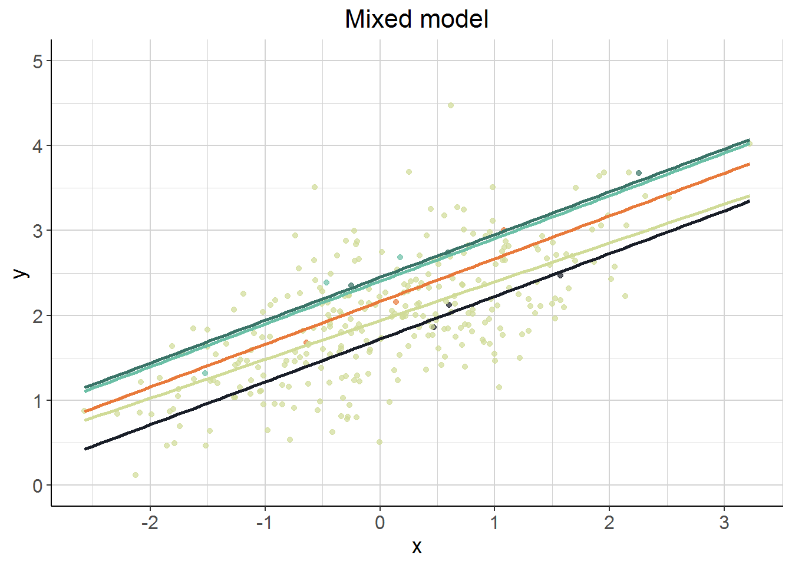
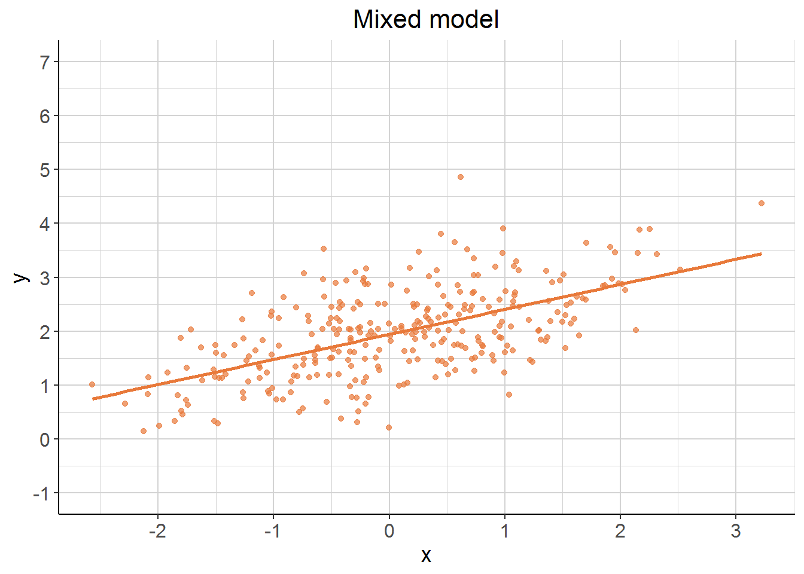
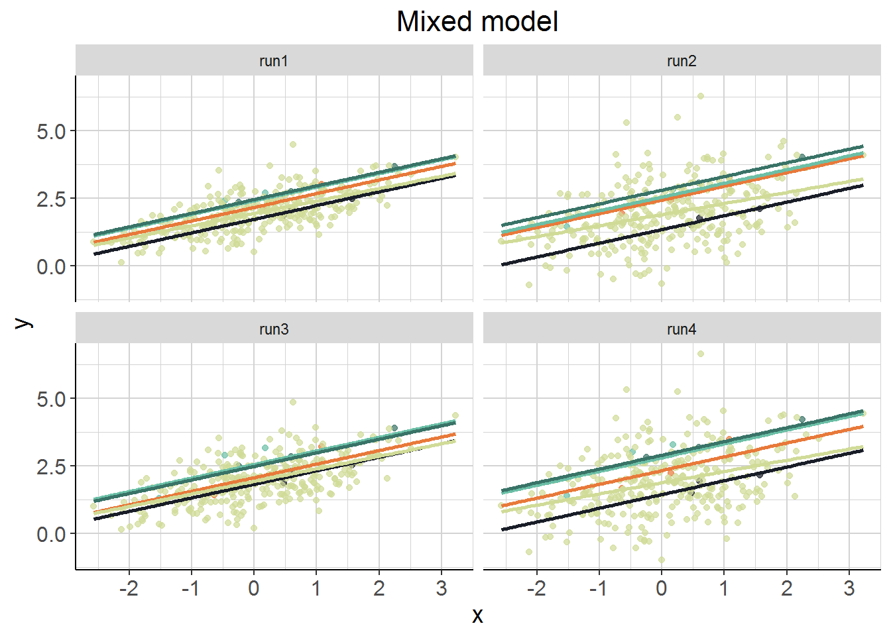
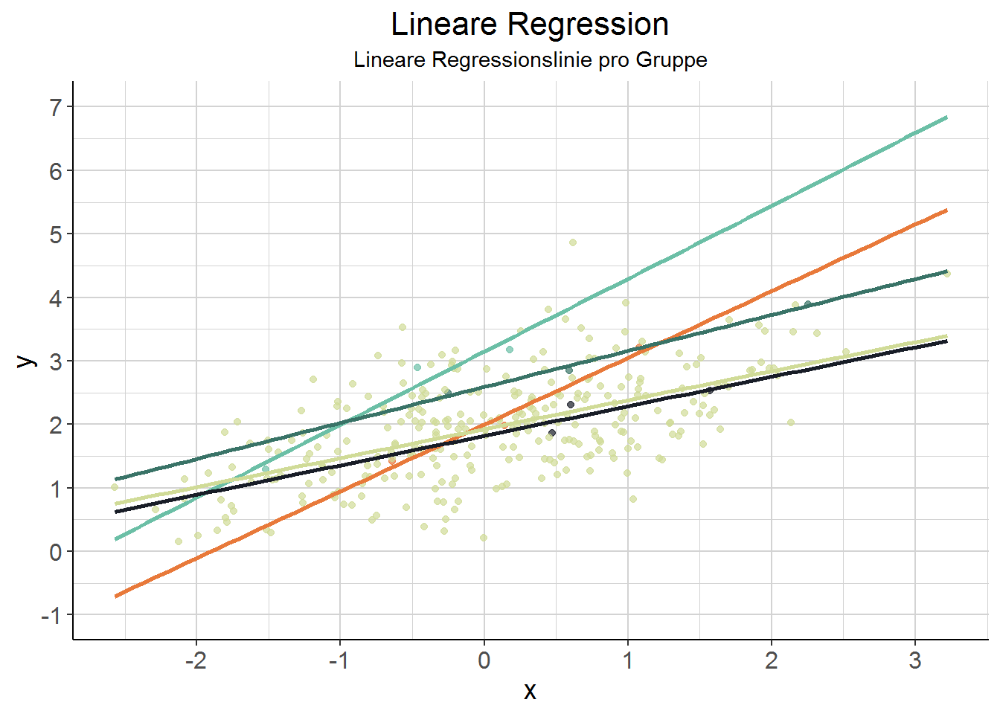
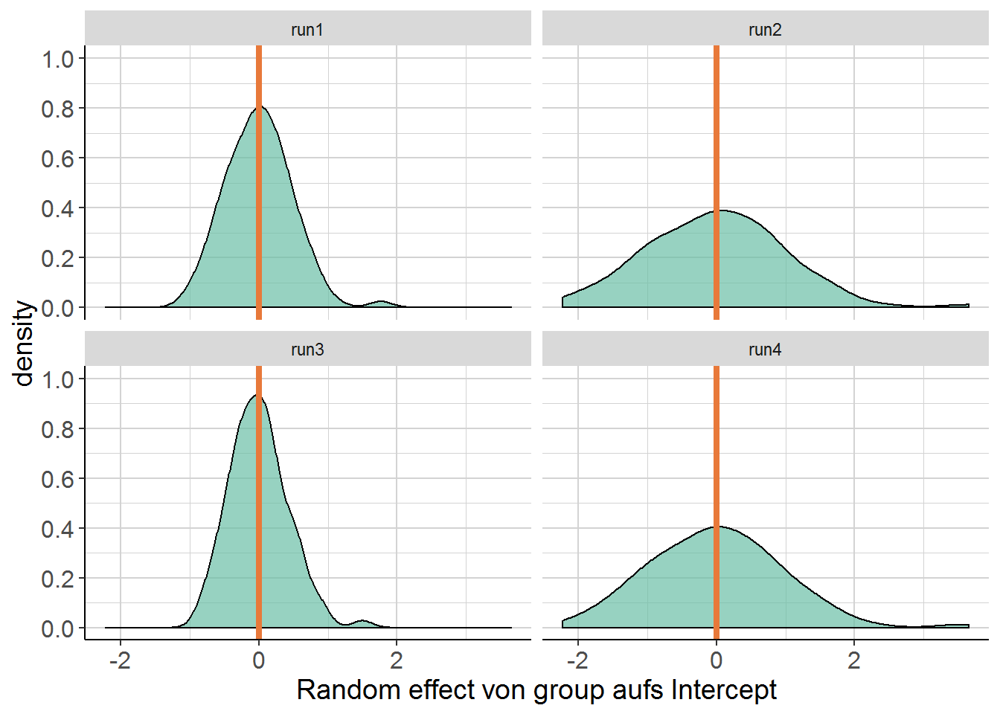
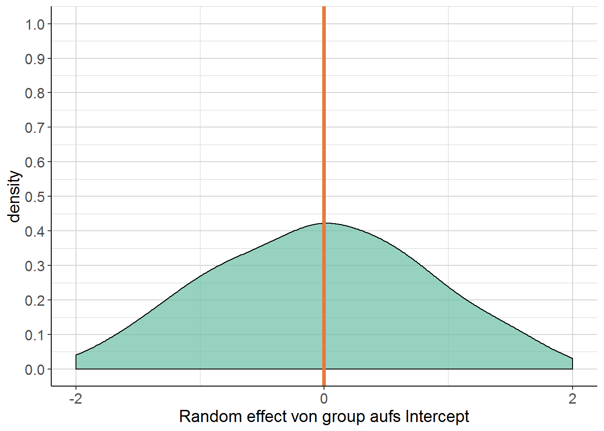
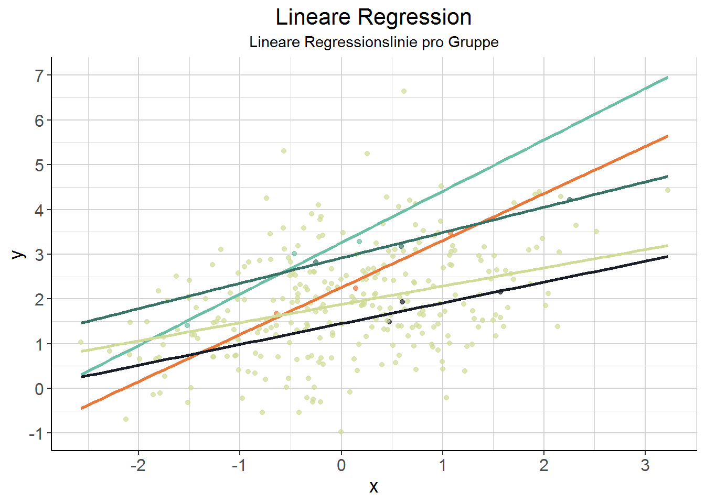
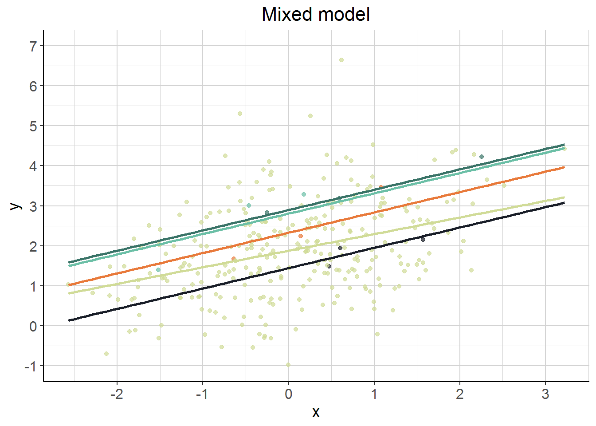

2.5 Simulationen
Zum besseren Verständnis: Rumspielen mit verschiedenen Parametern von simulierten Daten und das entsprechende Resultat im mixed model. In den Notes anstatt in den Übungen, weil echt hilfreich. Übersicht aller Modelle nebeneinander in der Tabelle unten.
“In what follows we’ll change various aspects of the data, then rerun the model after each change […]. For each note specifically at least one thing that changed in the results.”
0. First calculate or simply eyeball the intraclass correlation coefficient:
\[\frac{\textrm{random effect variance}}{\textrm{residual + random effect variance}}\] In addition, create a density plot of the random effects.
2.5.1 Run 1 - default
# vorgegebener Code siehe mixed_models_basics.Rmd
# Aber das geht so nicht - das muss erst mal in eine Funktion
rand_int_sim <- function(Ngroups, NperGroup, sdRandIntercept, sdError,
sdFixedEffect, AvIntercept){
N <- Ngroups * NperGroup
groups <- factor(rep(1:Ngroups, each = NperGroup))
u <- rnorm(Ngroups, sd = sdRandIntercept)
e <- rnorm(N, sd = sdError)
x <- rnorm(N)
y <- AvIntercept + sdFixedEffect * x + u[groups] + e
return(data.frame(x, y, groups))
}Which of the above represent the fixed and random effects?
x = fixed effect; u[groups] = random effect
# run 1
Ngroups <- 100
NperGroup <- 3
sdRandIntercept <- .5
sdError <- .25
sdFixedEffect <- .5
AvIntercept <- 2
# Um immer denselben Kram rauszubekommen
set.seed(2806)
run1 <- rand_int_sim(Ngroups, NperGroup, sdRandIntercept, sdError,
sdFixedEffect, AvIntercept)
model1 <- lmer(y ~ x + (1|groups), data = run1)
tidy(model1)Einmal die Tabelle hier zur Veranschaulichung, alles Weitere in der Vergleichstabelle für alle Läufe unten. Hier sehen wir aber zunächst, dass sich die von uns spezifizierten Parameter genau im Modell ablesen lassen: Der Residual Standard Error liegt bei .23 - wir haben dem error term e in der Simulation ja .25 zugewiesen. x wird (fast) genau wie spezifiziert auf .5 geschätzt. Und das Intercept passt auch: 1.95 (übergeben: 2). Das Intercept der groups hat einen Residual Standard Error von .50 - passt auch beinahe genau. Bin noch nicht vollkommen sicher, wie ich die aufgeklärte Varianz beurteilen soll.
tb_intracl <- as.data.frame(formatVC(VarCorr(model1), comp = c("Var", "Std"))) %>%
mutate(Variance = as.numeric(as.character(Variance)))
intracl1 <- (tb_intracl$Variance[1] / sum(tb_intracl$Variance)) * 100Intraclass correlation: Groups klären \(81.99\) \(\%\) der Gesamtvarianz auf.
2.5.1.1 Density Plot
Orange ist der Mittelwert, der 0 ist. Spannend aber, wie asymmetrisch das ist. Ich habe die Achsen der Density Plots mal so angepasst, dass sie vergleichbar sind.
# Sein Code für den density plot ist broken. Daher diese Version:
re <- ranef(model1)$groups
names(re) <- "Intercept"
re %>%
ggplot(aes(x = Intercept)) +
geom_density(fill = pick_colour(2, "farbschema")[2], alpha = .7) +
labs(x = "Random effect von group aufs Intercept") +
scale_y_continuous(breaks = seq(0, 1, .1), limits = c(0, 1)) +
scale_x_continuous(breaks = seq(-2, 2, 2), limits = c(-2, 2)) +
geom_vline(xintercept = mean(re$Intercept), colour = pick_colour(1, "farbschema"),
size = 1.5) +
julis_theme
2.5.1.2 Noch mehr Plots
Problem beim Plotten: Die Daten bestehen aus 100 3er-Grüppchen. Es ist nicht so übersichtlich, den Plot danach zu gruppieren. Daher hier mal vier rausgegriffen und der Rest zusammengefasst. Jede Gruppe hat eine lineare Regressionslinie bekommen. (Blau/orange vier herausgepickte Gruppen, grün-beige die restlichen Gruppen zusammengefasst.)
run1$highlight <- factor(ifelse(run1$groups %in% 1:4, run1$groups, 5))
run1 %>%
ggplot(aes(x = x, y = y)) +
geom_point(aes(colour = highlight), alpha = .7) +
geom_smooth(aes(colour = highlight), se = FALSE, method = "lm",
fullrange = TRUE) +
labs(title = "Lineare Regression", subtitle = "Lineare Regressionslinie pro Gruppe") +
scale_colour_manual(values = pick_colour(5, "farbschema")) +
julis_theme +
theme(legend.position = "none")
Interessanterweise sieht es hier so aus, als wäre auch ein random slope pro Gruppe angemessen. Mal zum Vergleich die Schätzungen des linearen Modells:
run1$pred_sim1 <- predict(model1)
run1 %>%
ggplot(aes(x = x, y = y)) +
geom_point(aes(colour = highlight), alpha = .7) +
geom_smooth(aes(y = pred_sim1, colour = highlight), se = FALSE, method = "lm",
fullrange = TRUE) +
scale_colour_manual(values = pick_colour(5, "farbschema")) +
scale_y_continuous(breaks = seq(0, 5, 1), limits = c(0, 5)) +
labs(title = "Mixed model", "Prediction des mixed models pro Gruppe") +
julis_theme +
theme(legend.position = "none")
D.h. wenn man jede Gruppe für sich linear schätzt (was geom_smooth mit method = "lm" hier ja tut), ergibt sich ein anderes Bild als durch das mixed model. Wir wissen ja durch die Simulation, dass es keine random slopes pro Gruppe gibt (vermutlich würde auch das lineare Modell ähnliche Schätzungen liefern, wenn es nicht nur drei Datenpunkte pro Gruppe wären). Schon krass irgendwo, dass ein mixed Model viel mehr ist (sein kann?) als einfach nur ein lineares Modell pro Gruppe. Man beachte, dass die zusammengefasste Schätzung für die restlichen Gruppen einen anderen Slope hat, weil hier die unterschiedlichen Intercepts (minus die der gehighlighteten Gruppen) alle aufeinander prallen.
TO DO: Hier noch mal zurückkommen, wenn random slopes dazu kommen und schauen, ob die Ergebnisse von linearen Schätzungen pro Gruppe (Plot 1) und einem mixed model mit random slopes (allein und mit random intercepts?) sich unterscheiden!
2.5.2 Run 2 - Different random effect variance
1. Change the random effect variance/sd and/or the residual variance/sd and note your new estimate of the ICC, and plot the random effect as before.
Ngroups <- 100
NperGroup <- 3
sdRandIntercept <- 1 #changed
sdError <- .25
sdFixedEffect <- .5
AvIntercept <- 2
set.seed(2806)
run2 <- rand_int_sim(Ngroups, NperGroup, sdRandIntercept, sdError,
sdFixedEffect, AvIntercept)
model2 <- lmer(y ~ x + (1|groups), data = run2)Siehe Zusammenfassung unten: Im Prinzip sind alle Werte dieselben bis auf den Residual Standard Error für das Intercept der Groups. Der ist jetzt bei 1 (vorher .50), und das ist ja auch das Einzige, was ich geändert habe. Interessanterweise gibt es leichte Abweichungen in den anderen Werten. Das sollte nicht daran liegen, dass ich eingangs zwar denselben Seed gesetzt habe, aber den Prozess des Samplings dann durch Änderungen in den Parametern vor dem Sampling des Intercepts verändert habe. Das sollte dann passieren, wenn ich das N ändere und somit der Startpunkt (vom Seed aus) für das Sampling des Intercepts ein anderer ist. Aber wenn ich hier keinen Denkfehler mache, wurde das Intercept leicht durch die Varianz des random effects (auf das Intercept) beeinflusst … ?
Intraclass correlation: Groups klären \(94.94\) \(\%\) der Gesamtvarianz auf. Was mega krass ist. Ergibt natürlich Sinn, weil ich die Varianz der Gruppen brutal hochgeschraubt habe. Ich verstehe nur noch nicht ganz, wieso die fixed effects hier nicht einbezogen werden, sondern nur der Effekt von group durch group \(+\) residual gerechnet wird? Hat vermutlich damit zu tun, dass der Effekt von \(x\) ja mit oder ohne random intercept derselbe bleibt.
2.5.2.1 Spielt dieselben Plots nochmal
Der Density Plot ist nur noch halb so hoch, aber dafür doppelt so breit.
re <- ranef(model2)$groups
names(re) <- "Intercept"
re %>%
ggplot(aes(x = Intercept)) +
geom_density(fill = pick_colour(2, "farbschema")[2], alpha = .7) +
labs(x = "Random effect von group aufs Intercept") +
scale_y_continuous(breaks = seq(0, 1, .1), limits = c(0, 1)) +
scale_x_continuous(breaks = seq(-2, 2, 2), limits = c(-2, 2)) +
geom_vline(xintercept = mean(re$Intercept), colour = pick_colour(1, "farbschema"),
size = 1.5) +
julis_theme

2.5.3 Run 3 - Different residual variance
# run 3
Ngroups <- 100
NperGroup <- 3
sdRandIntercept <- .5
sdError <- .5 # changed
sdFixedEffect <- .5
AvIntercept <- 2
set.seed(2806)
run3 <- rand_int_sim(Ngroups, NperGroup, sdRandIntercept, sdError,
sdFixedEffect, AvIntercept)
model3 <- lmer(y ~ x + (1|groups), data = run3)Siehe Zusammenfassung unten. Vergleich zum Default Model 1: Geändert hat sich nur der Residual Standard Error: Von .23 auf .47.
Intraclass correlation: Groups klären \(51.75\) \(\%\) der Gesamtvarianz auf. Also viel weniger als in Lauf 1 oder 2, weil das Residual natürlich umso mehr Varianz aufklärt.
2.5.3.1 Spielt dieselben Plots nochmal
Vergleich zu Lauf 1: Etwas enger und höher. Weil das Residual größer ist, schätzen wir den Effekt der Gruppe aufs Intercept eher auf 0?



2.5.4 Run 4 - Different random effect and residual variance
# run 4
Ngroups <- 100
NperGroup <- 3
sdRandIntercept <- 1 # changed
sdError <- .5 # changed
sdFixedEffect <- .5
AvIntercept <- 2
set.seed(2806)
run4 <- rand_int_sim(Ngroups, NperGroup, sdRandIntercept, sdError,
sdFixedEffect, AvIntercept)
model4 <- lmer(y ~ x + (1|groups), data = run4)Siehe Übersicht unten: Das sind jetzt die beiden Veränderungen aus Run 2 und 3 zusammengeführt.
Intraclass correlation: Groups klären \(81.99\) \(\%\) der Gesamtvarianz auf. Interessanterweise etwa so viel wie das default Modell 1.
2.5.4.1 Spielt dieselben Plots nochmal
Sieht eher aus wie der Density Plot aus Model 2.



2.5.5 Übersicht
- Run 1: default
- Run 2: different random effect variance
- Run 3: different residual variance
- Run 4: different random effect and residual variance
| effect | group | term | run1 | run2 | run3 | run4 | run1 | run2 | run3 | run4 | intraclass correlation |
|---|---|---|---|---|---|---|---|---|---|---|---|
| fixed | NA | Intercept | 1.95 | 1.90 | 1.94 | 1.89 | 0.05 | 0.10 | 0.06 | 0.10 | 81.99 |
| fixed | NA | x | 0.50 | 0.51 | 0.50 | 0.51 | 0.02 | 0.02 | 0.03 | 0.03 | 94.94 |
| random | groups | SD Intercept | 0.50 | 1.01 | 0.48 | 0.99 | NA | NA | NA | NA | 51.75 |
| random | residual | SD Observation | 0.23 | 0.23 | 0.47 | 0.46 | NA | NA | NA | NA | 81.99 |